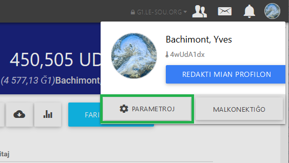

En Cesium, ofte la help-vezikoj aperas por klarigi al vi iujn funkciojn.
Vi povas malaktivigi ilin irante en la rubrikon "Parametroj":

kaj poste malŝaltante la butonon "Aktivigi la rilatigajn help-vezikojn":